BY JENNIFER BOWERS, PHD, RD
| หมายเชข lot | |||||
Flavored almonds
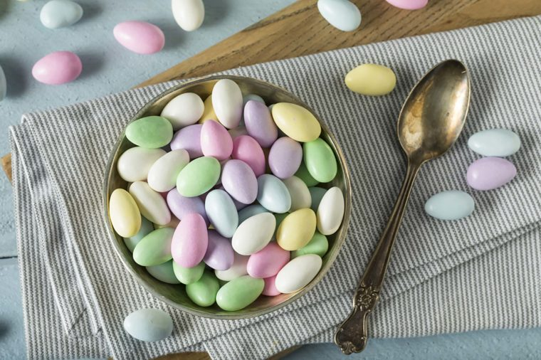The news on nuts is good: There one of the healthiest snacks you can have—and here are the top healthiest nuts to snack on. From sweet flavors like caramel latte, snickerdoodle, and butter toffee to savory Bloody Mary, balsamic herb, or asiago cheese, California-grown almonds from Stewart and Jasper farms pack a nutrient punch with fiber, calcium, and healthy fats. They even carry almond butters and flours.
Fruit of the month club
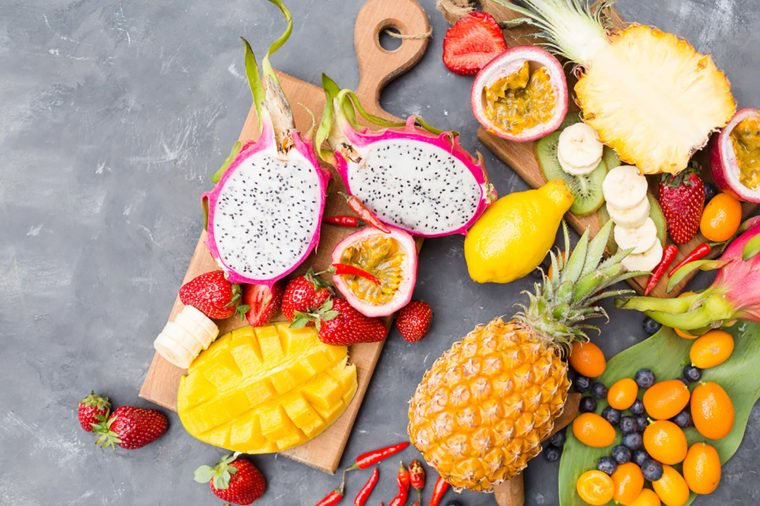Getting good fruit in the offseason can be tricky—though here's one alternative that can get you through winter. But the food gifts that truly keeps on giving is fruit-of-the-month clubs from The Fruit Company. Choose from the Harvest Club with apples, pears, and oranges, or the Exotic Club which includes persimmons, kiwi, and star fruit. Organic options and various lengths of packages are available. Fresh fruit delivered to your home? Yes, please!
Coffee
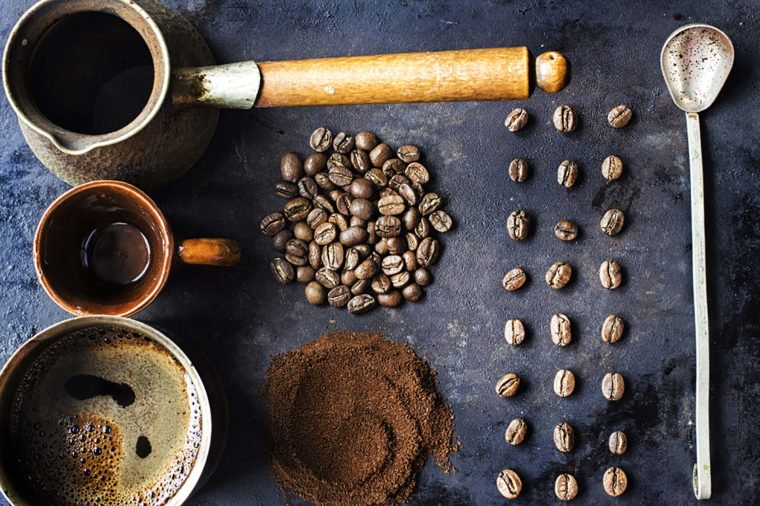For the caffeine lover in your life, there are more and more reasons to indulge guilt-free thanks to news on the emerging health benefits of coffee. So consider a coffee of the month club. Beans from all over the world, including Guatemala, Peru, and Honduras are sent whole or ground. Grounds for Change guarantees that their coffee is Fair Trade Certified and organic, making the gift beneficial for the environment and the socioeconomics of the originating country. Decaf varieties available, too!
Salsa
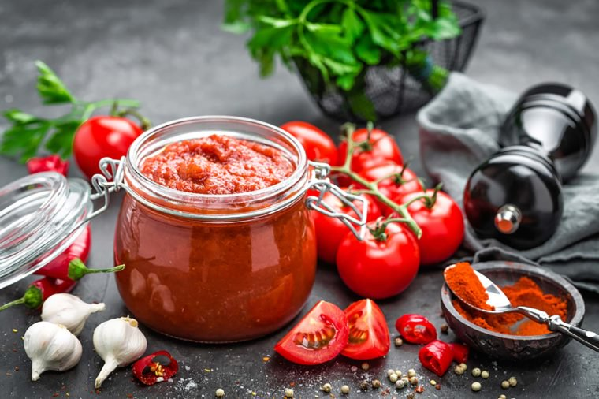High in vitamins C and A, fresh homemade salsas makes fabulous and healthy holiday food gifts. Looking for authentic and innovative flavors from the southwest? Try the Arizona Spice Company with salsas with fun names such as Arizona Reaper and Magnificent Mango. These award-winning condiments are all-natural; several varieties use the famous Hatch green chilies from New Mexico. Intensities range from mild, medium, hot, habanero and ghost pepper heats, so there's something for everyone.
Pomegranate

Full of phytonutrients, fiber, folate and vitamins C and K, pomegranates make unique and healthy holiday food gifts. A box of seasonal Crimson Pomegranates is bright and festive in color, with tart-sweet flavors to include as healthy snacks or in fun holiday recipes. And they can help you cover the red part of healthiest foods from each color of the rainbow. Pomegranate juice is extremely high in antioxidants, too. Fun fact—pomegranates are in the berry family!
Figs and dates
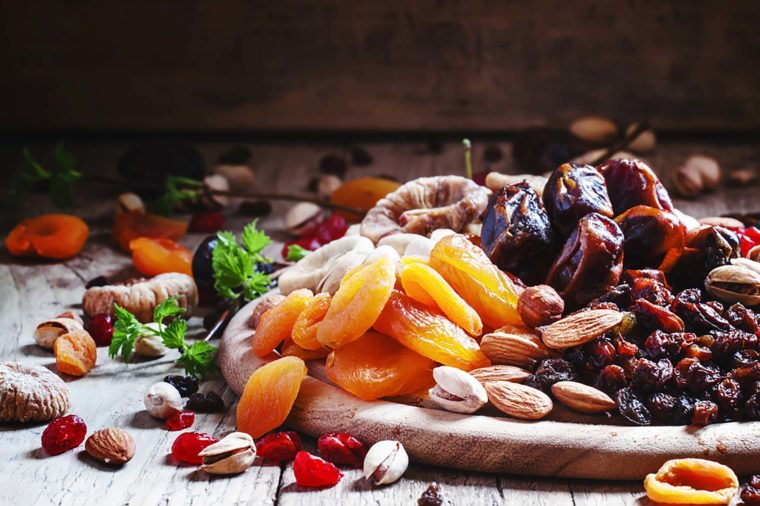The beauty of high-fiber dried fruit is longevity. They'll keep for a while, so when the rest of the holidays fade away, this gift reminds of the sweet celebratory season. Figs and dates from Nuts.com are the perfect gift for friends following the Mediterranean diet, and are offered in pretty food gift baskets or trays. Here are some more ways to make your diet more Mediterranean.
Popcorn
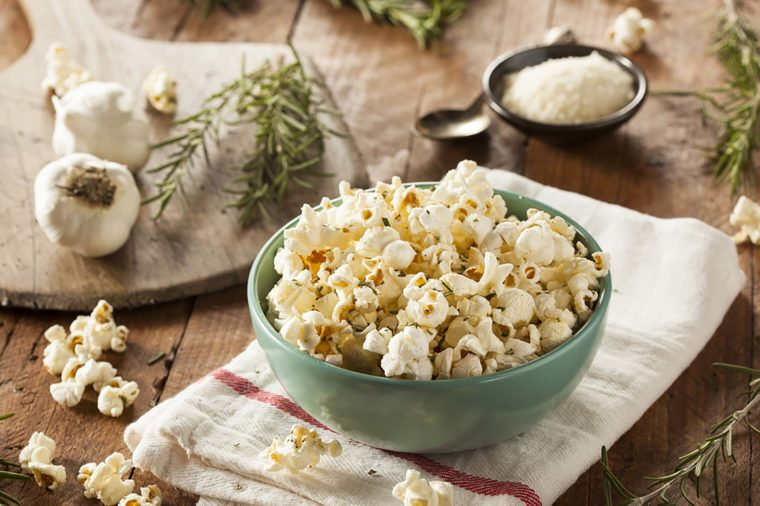Sweet and savory flavored popcorn suits everyone on your shopping list—plus, there are at least nine reasons why popcorn needs to be in your diet. Poppy Handcrafted Popcorn features non-GMO corn popped in coconut oil. Choose from jalapeno cheddar, cinnamon bourbon pecan, pumpkin spice caramel, dark chocolate pretzel, gingerbread, and more. Sold by the bag or decorative tin, popcorn is a fun food gift idea.
Spices
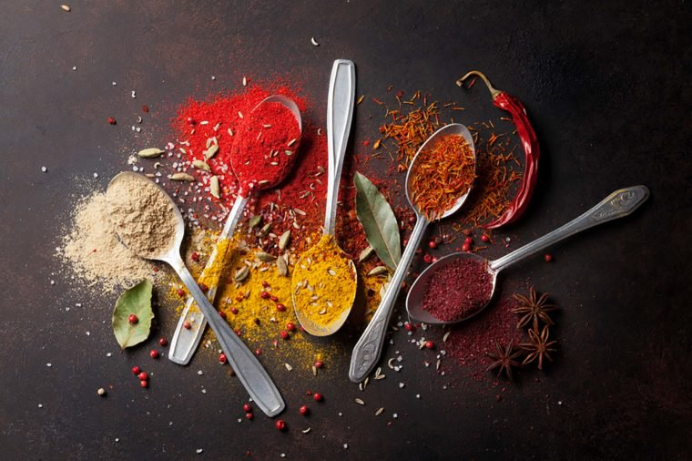If you want to get more health benefits from your diet, add spices. Help your friends and family explore new international tastes with unique spices from World Spice. Rubs, marinades, whole spices and blends in an impressive variety of flavors. The blends range from Adobo to Za'atar, and everything in between. Some fun finds: shawarma, orange tarragon, jerk, mulled spices, Chinese five spice, and 10 different curry blends.
Bean soup mix
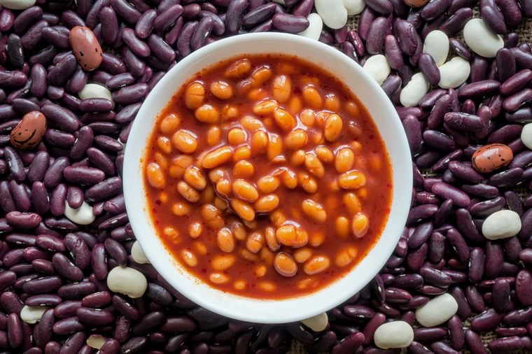You probably know that beans deliver amazing health benefits. And nothing says comfort food better than a hot bowl of soup in the winter. Nuts.com sells decorative soup mixes including a variety of dried beans (high in fiber, protein, and magnesium). Simply add a few other ingredients, and dinner is done. Mason jars filled with colorful split peas, black-eyed peas, and kidney, black, pinto and white beans make attractive holiday food gifts.
Avocados
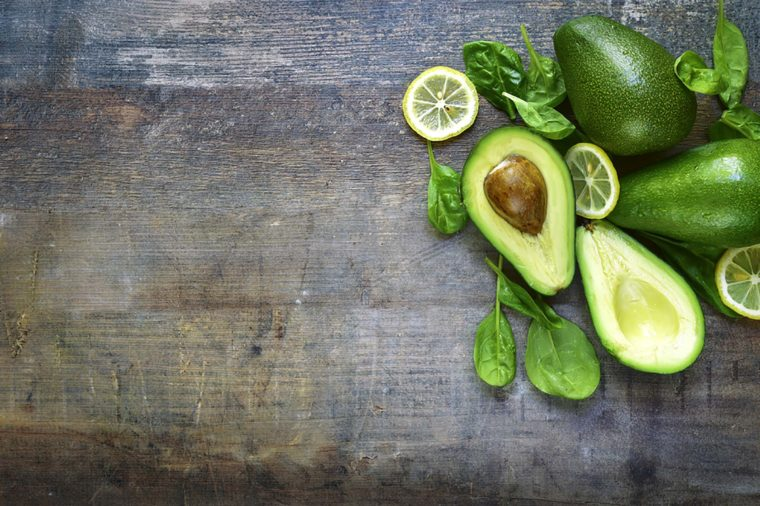Creamy, decadent and packed with fiber, folate, healthy fats and B vitamins, avocados are practically a perfect food—unless they're not yet ripe. Which is why you need to know the trick to ripening an avocado in under 10 minutes. Take a look at the Avocado of the Month Club: That would be my top pick for healthy holiday food gifts (are you reading this, beloved family?!). Farm fresh California avocados delivered to your door—what could be better than that? Spread mashed avocado on breakfast toast, sprinkle chunks onto a salad, or just eat the delicious flesh with a spoon.
Teas
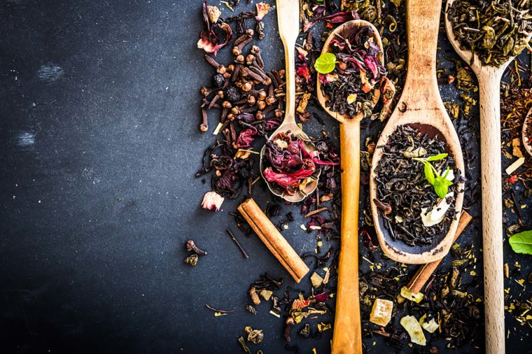Stash Teas sold as loose tea leaves, K-cups, or in tea bags, allow your recipient to sit back and relax after the hectic holiday season. There's a tea flavor for every mood. Herbal, decaffeinated, black, green and more—with over 60 varieties, there is truly something for everyone. Some holiday-inspired flavors include Christmas in Paris and chocolate mint, perfect Christmas gift ideas.
Citrus
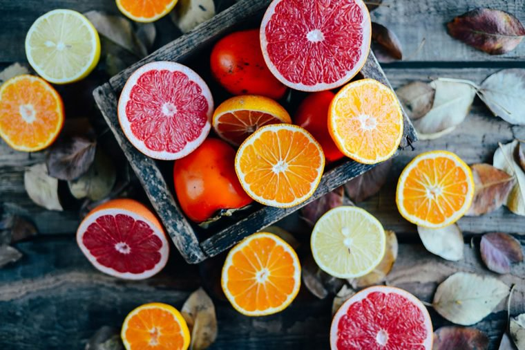Growing up in Arizona, nothing says winter to me like fresh citrus—and this particular fruit is a citrus superstar. Hale Groves in Florida ships beautiful boxes of pink grapefruit, navel oranges, and honeybells. Honeybells are a cross between orange and tangerine, super sweet and bursting with vitamin C. Stick these beauties in stockings for a throw-back gift, or send a box to your relatives stuck in winter snow for a bright treat.
Herb garden
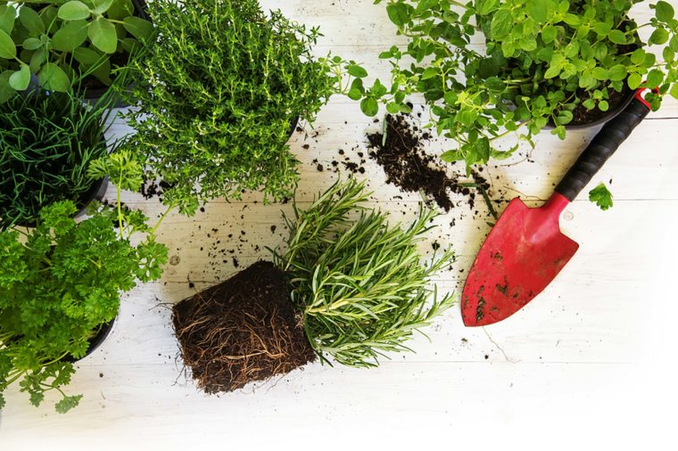Growing herbs indoors works in any climate, providing cooking herbs at your fingertips. Individual herbs or an assortment of herbs in an Aerogarden are both top choices for healthy holiday gift ideas. Choose from small, medium or large units, all with self-watering systems. Keeping fresh herbs is easy with these storage tricks.
Artichokes
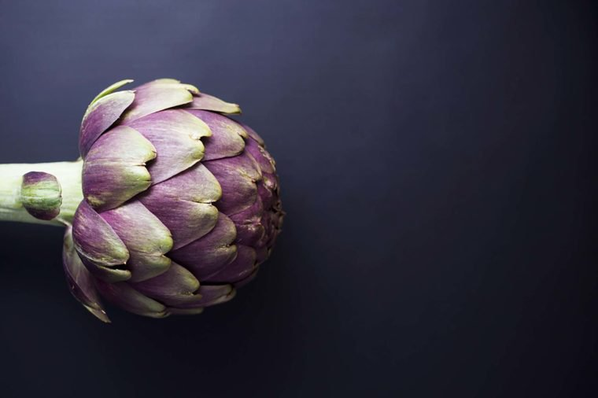Did you know that artichokes fit into a Mediterranean diet, rich in fiber, vitamin C, potassium, and iron? Consider gifting a box of these beautiful veggies straight from the California farm to your loved one's doorstep. Include fresh artichokes in a food gift basket.
Olive oil
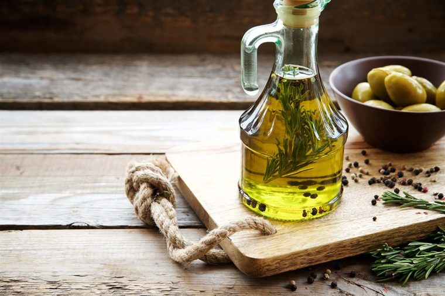When investigating the foundation of a healthy diet, you will always find olive oil near the top of the list, primarily because the oil is linked to prevention of several chronic diseases. Olive Oil Lovers have the answer when it comes to unique healthy holiday gift ideas. Select from olive growing regions (including Tuscany, Sicily and Valencia) or flavored oils (basil, lemon, thyme). Can't decide? How about an olive-oil-of-the-month club to explore all types throughout the year?